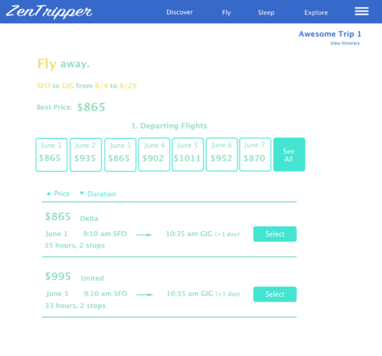
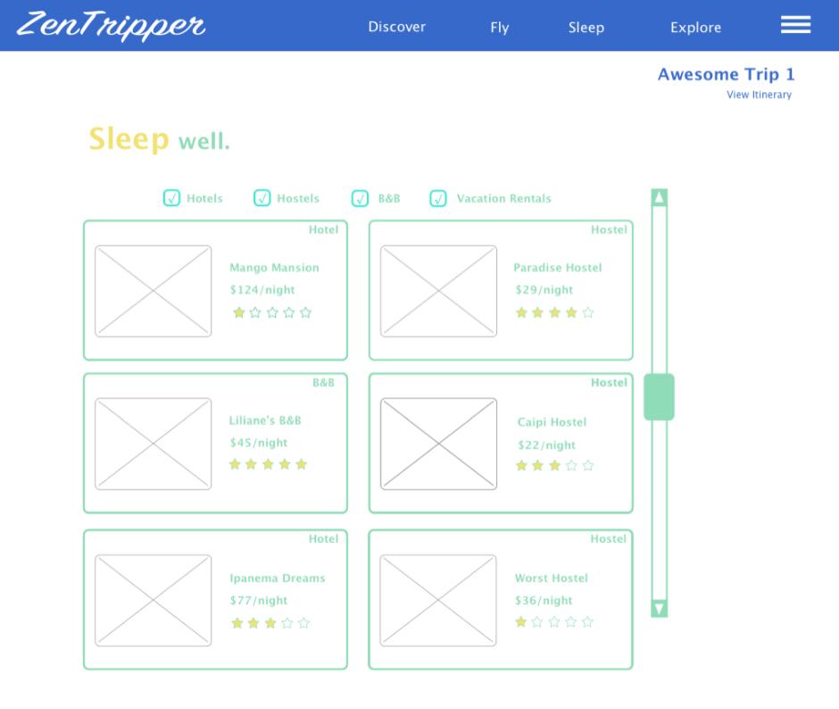
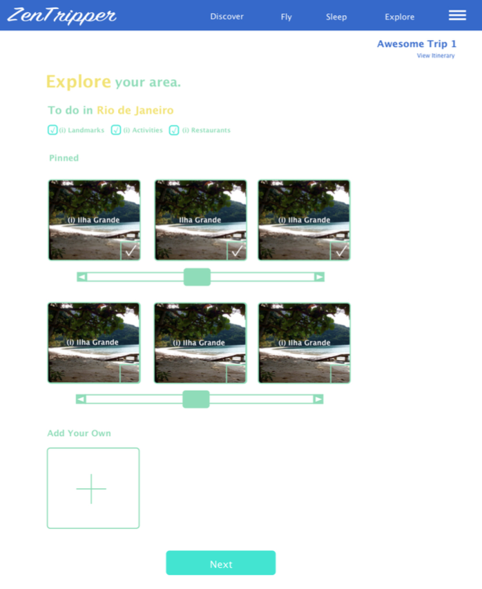
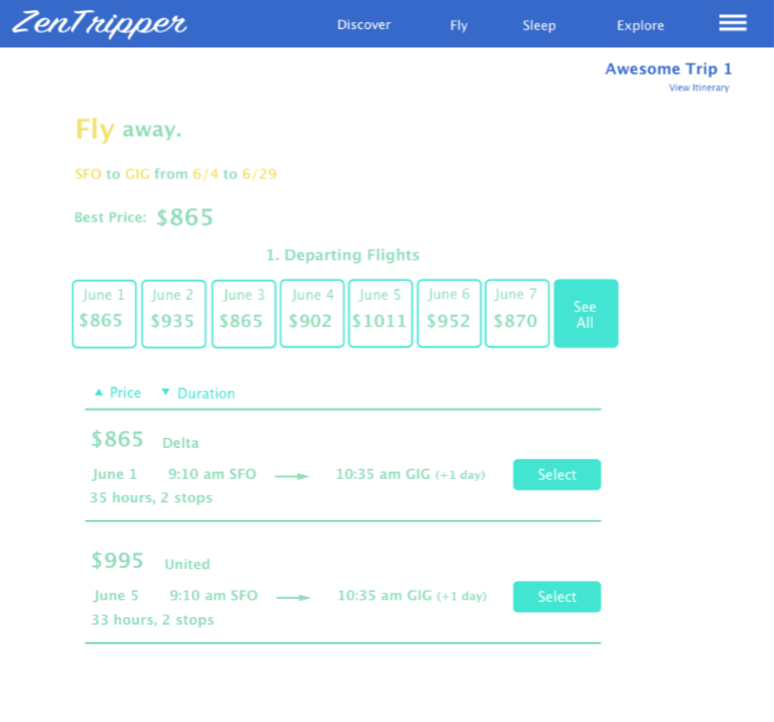
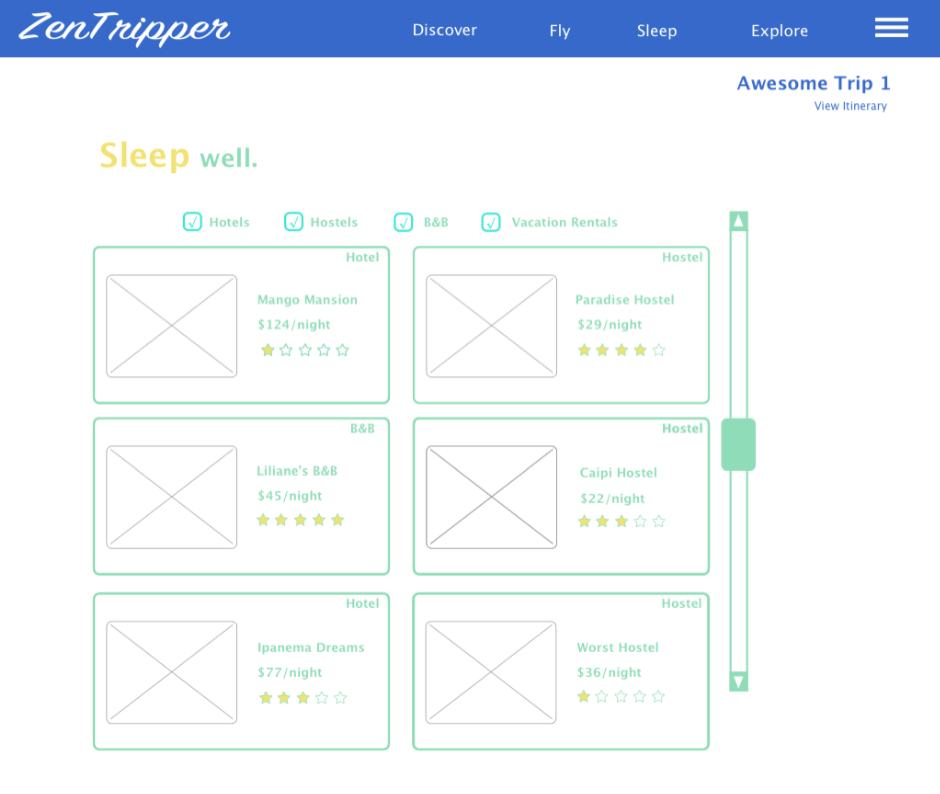
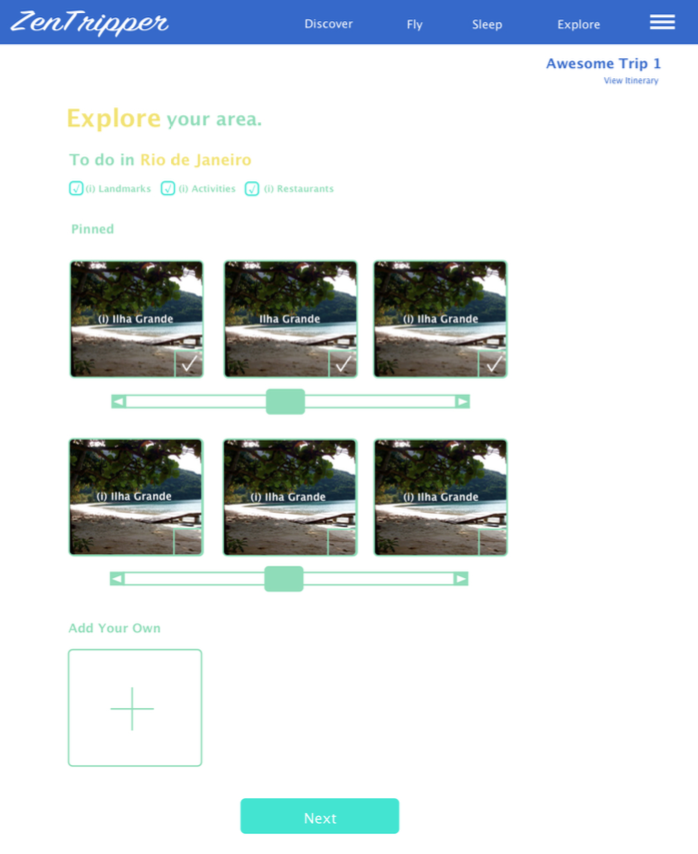
 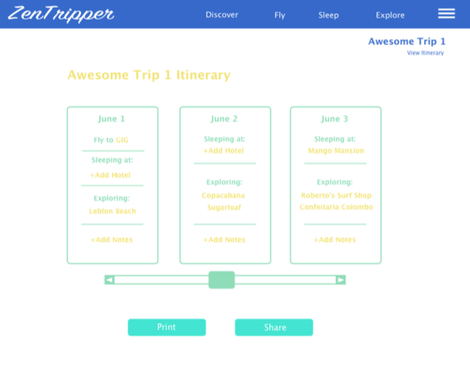
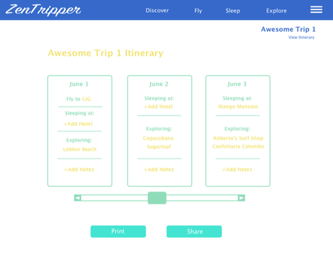
Focus: UX research, user testing, prototyping
ZenTripper is a one-stop shop for travel planning. It supports users through the entire process— from discovering a destination, to booking flights and finding activities, through to printing out a completed itinerary.
Problem Statement
Currently, there is no single resource that travelers can turn to when planning a trip.
There are many resources for locating flights, hotels, and activities, and there are a few tools that help travelers manage their itineraries. However, there’s not a tool that can walk them through the entire process. Users want to avoid hassle and clutter while planning, and keep their resources to a minimum. They want their planning experience to be as fun as the trip itself!
Interviews with 6 people, ages 26-54, M/F
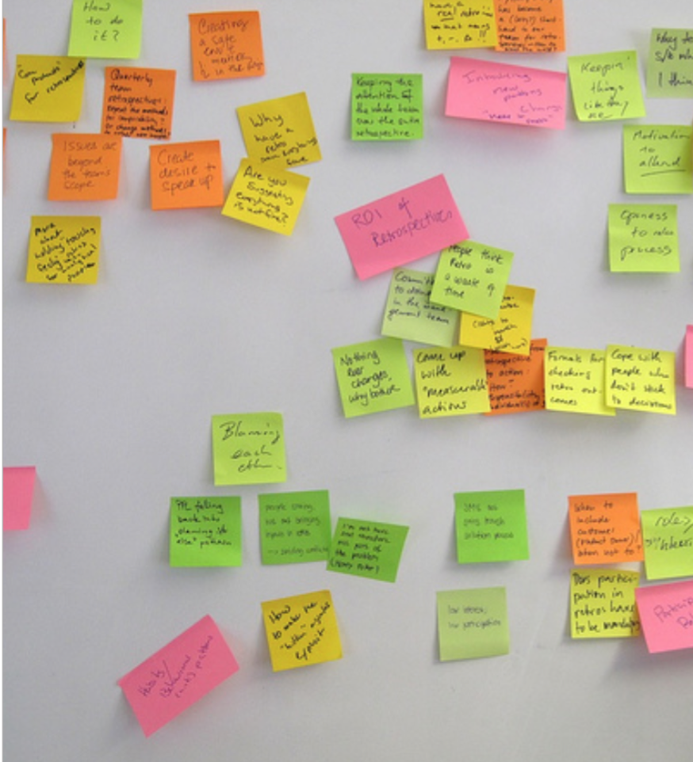“There’s no one place I can look for travel info, I switch back and forth between many sites.”
“It’s not exactly the smoothest process, especially when websites open multiple tabs.”
“I usually keep a lot of things in my head because writing it down takes too much extra time.”
“I don’t like having to figure out the best flights, activities and hotels from scratch.”
“There are a lot of different steps and sometimes I’m afraid I forgot something.”
“It takes me a while to make decisions because the amount of information is overwhelming.”
Competitive Analysis
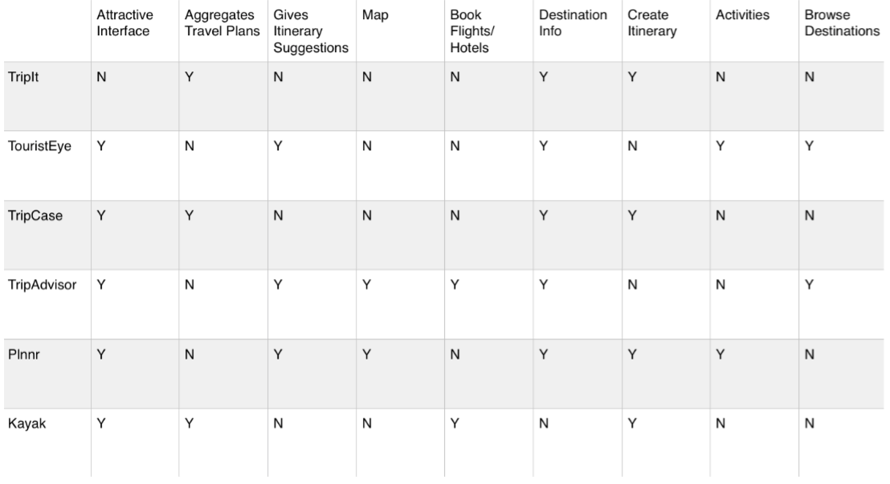Looking at competitors, the most unique features of ZenTripper would be ability to explore destinations, support for finding activities, ability to map out the itinerary, and general consolidation of needs.
Kayak unveiled a feature for finding activities while I was midway through this project— a great sign that I was on track and doing good user research!
Features like booking flights and finding hotels were expected...
Mapping out an itinerary or exploring destinations by budget were not.
Creating balance between the two was key to containing the scope of the project while enticing the target users.
How might we...
make educated guesses to reduce user input?
present information in manageable chunks?
reduce cognitive load and streamline decisions?
create a sense of fun?
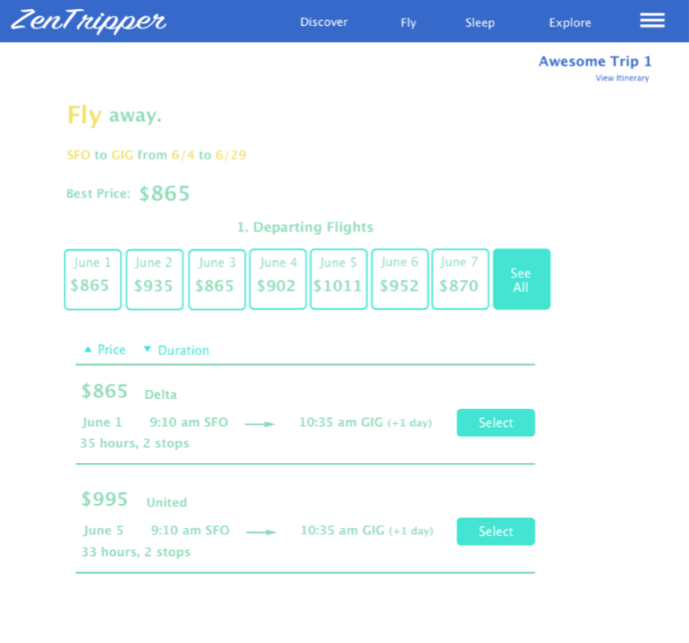
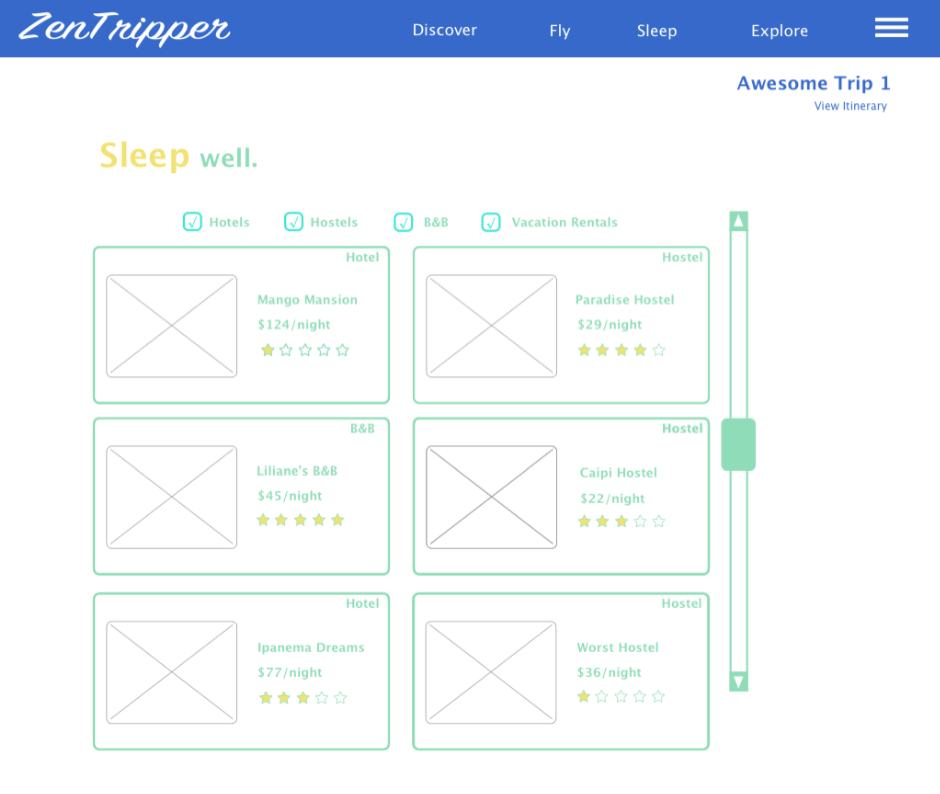
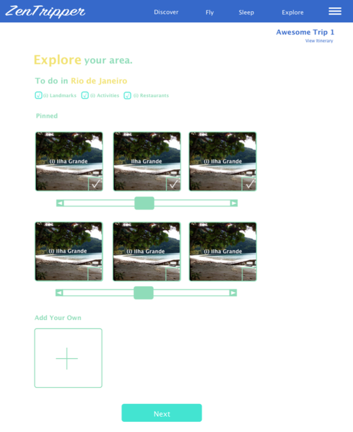
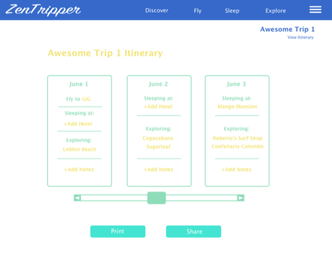
Users most enjoyed the exploring the new tools of the app and the automation of the informational flow from one part to the next. Onboarding may be necessary to help manage the expectations of new users on how certain features work. While interface is purposely clean, it needs to remain informative. Better labeling would help.